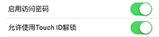
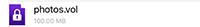
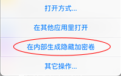
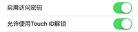
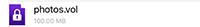
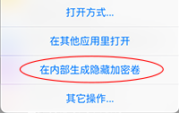
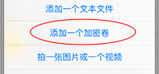
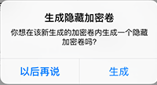

加密保护
本应用提供三个层级的加密保护：
- 设置访问密码和Touch ID。启用此功能后，不知道访问密码和Touch ID的人将无法进入本应用。但是需注意的是，将设备连接电脑后其他人用iTune或者一些软件如iExplorer可以读取本应用内文件。因此，这只是最基本的保护级别，而实际上不少安全应用止步于此保护级别。

- 加密盘。我们采用公开的、通过第三方审计的、全球流行十年之久的TrueCrypt（及其继任者VeraCrypt）虚拟加密盘格式（它的详细安全性讨论见后）。虚拟加密盘文件未打开前看起来就是一个普通文件（推荐以.vol为扩展名但没有限制），而其实里面有一个加密的文件系统（本应用使用AES-256加密，但是也支持其它加密算法），只有知道密钥才能打开该文件系统并对其内文件进行操作。加密盘的优点很多，比如它不仅加密你的文件内容，还对文件的元信息如文件名、文件大小等加密。盘加密（disk encryption）也是几乎所有桌面操作系统实现更高数据安全性时的选择（如Mac OS X 的FileVault解决方案）。

- 隐藏加密盘。有时候用户可能会被强迫要求说出加密盘文件的密码（比如失去人身自由或女朋友要求等），这时候就需要用到更复杂的隐藏加密盘功能。隐藏加密盘是在加密盘文件的后部分生成的一个内部的加密盘。其他人如果不知道隐藏盘的密码，不仅无法得知隐藏加密盘的内容，而且无法知道隐藏盘是否存在。因此，用户可以将最秘密的文件放在加密盘内的隐藏加密盘中，而在受到强迫、被要求说出加密盘密码时，只需给出外部盘的密码并否定隐藏加密盘的存在即可。

- 设置访问密码和Touch ID。启用此功能后，不知道访问密码和Touch ID的人将无法进入本应用。但是需注意的是，将设备连接电脑后其他人用iTune或者一些软件如iExplorer可以读取本应用内文件。因此，这只是最基本的保护级别，而实际上不少安全应用止步于此保护级别。

- 加密盘。我们采用公开的、通过第三方审计的、全球流行十年之久的TrueCrypt（及其继任者VeraCrypt）虚拟加密盘格式（它的详细安全性讨论见后）。虚拟加密盘文件未打开前看起来就是一个普通文件（推荐以.vol为扩展名但没有限制），而其实里面有一个加密的文件系统（本应用使用AES-256加密，但是也支持其它加密算法），只有知道密钥才能打开该文件系统并对其内文件进行操作。加密盘的优点很多，比如它不仅加密你的文件内容，还对文件的元信息如文件名、文件大小等加密。盘加密（disk encryption）也是几乎所有桌面操作系统实现更高数据安全性时的选择（如Mac OS X 的FileVault解决方案）。

- 隐藏加密盘。有时候用户可能会被强迫要求说出加密盘文件的密码（比如失去人身自由或女朋友要求等），这时候就需要用到更复杂的隐藏加密盘功能。隐藏加密盘是在加密盘文件的后部分生成的一个内部的加密盘。其他人如果不知道隐藏盘的密码，不仅无法得知隐藏加密盘的内容，而且无法知道隐藏盘是否存在。因此，用户可以将最秘密的文件放在加密盘内的隐藏加密盘中，而在受到强迫、被要求说出加密盘密码时，只需给出外部盘的密码并否定隐藏加密盘的存在即可。

加密保护细节：
- 支持设置访问密码和Touch ID解锁。访问密码可以是简单（4数字）或者复杂（无长度和字符限制）类型。在3次登陆错后本应用将禁止登陆半小时。用户如果忘记了访问密码将需要重置本应用——这将同时清除访问密码和应用内保存的文件。- 支持生成、打开并修改TrueCrypt／VeraCrypt格式的加密盘文件。点击“＋”按钮并选择“添加一个加密卷”即会弹出输入框，输入相关信息便可以生成加密卷。单击以.vol，.vc，或者.tc为后缀的加密盘文件即会提示输入密码以打开，对其它后缀的加密盘文件可以在其上长按后，点击“当成加密卷打开”来打开。打开加密卷后即可操作里面的文件。

- 支持隐藏加密盘。在生成完加密盘后会提示是否在其内生成隐藏加密盘，选择生成后即会弹出对话框用以输入隐藏盘信息来生成；如当时没有选择生成，可以后来在加密盘文件上长按出菜单后选择“在内部生成隐藏加密卷”来继续生成。隐藏加密盘的打开方法与其外部盘的打开方法一样，区别是在提示输入密码时，需要输入隐藏加密盘的密码而不是外部盘的密码（因此一个盘文件的外部盘的和内部隐藏加密盘的密码必须不一样）。使用隐藏加密盘有两个需注意的地方，一是一个加密盘内只能有一个隐藏加密盘，在已有隐藏盘的盘内再次生成隐藏盘的话会将旧的隐藏盘覆盖掉，二是外部盘不能写太多东西而与隐藏盘区域重合，否则会导致隐藏盘被破坏。

- 目前仅支持FAT文件系统格式（FAT12，FAT16和FAT32）的加密盘，不支持NTFS文件系统格式的加密盘。
- 在桌面操作系统（PC或Mac）上你可以使用Truecrypt 7.1a 来打开打开或者生成TrueCrypt加密盘文件（http://www.truecrypt71a.com/download），或使用VeraCrypt 1.0f 来打开打开或者生成VeraCrypt／TrueCrypt加密盘文件（https://veracrypt.codeplex.com）.
- 加密盘内文件的操作方法大致与盘外文件一致，除了因为系统API限制或当前实现限制导致的差异：
a. 压缩文件无法直接打开需拷贝出来打开；
b. 视频音频文件目前是先拷贝到缓存文件夹下再播放，但退出播放后会自动删除；
c. 图片浏览器不同。